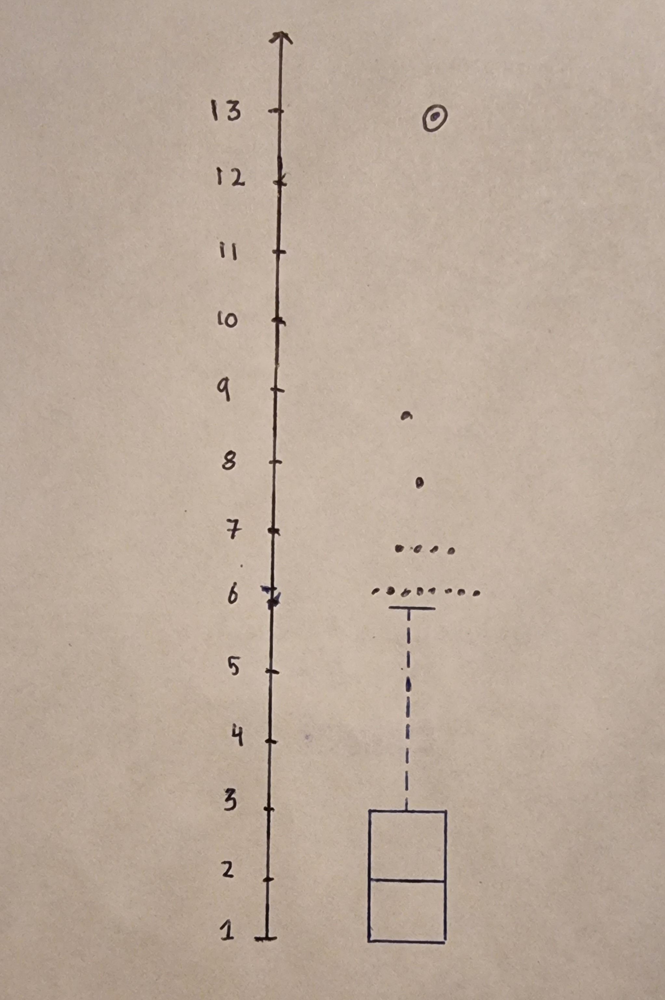
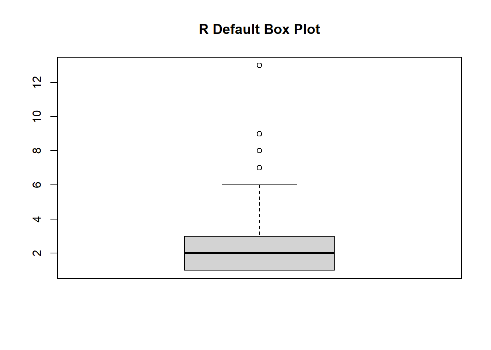

library(tidyverse)
numbats <- readr::read_csv('https://raw.githubusercontent.com/rfordatascience/tidytuesday/master/data/2023/2023-03-07/numbats.csv')Q3
Exercise 3
Download the numbats data from Tidy Tuesday, following the instructions on the website.
Load the data
a. Filter the data to be sightings after 2010.
numbatsfilt <- numbats |>
filter(!is.na(year)) |>
filter(year > 2010)b. Count the number of sightings for each day.
numbats_daily_count <- numbatsfilt |>
group_by(day) |>
summarize(daily_sightings = n())
numbats_daily_count# A tibble: 204 × 2
day daily_sightings
<date> <int>
1 2011-08-04 2
2 2011-12-05 1
3 2011-12-06 1
4 2011-12-07 4
5 2011-12-08 1
6 2011-12-09 2
7 2011-12-10 3
8 2011-12-13 1
9 2011-12-15 2
10 2011-12-19 3
# ℹ 194 more rowsc. Make a stem-and-leaf of the sightings. Describe the shape.
stem(numbats_daily_count$daily_sightings)
The decimal point is at the |
1 | 00000000000000000000000000000000000000000000000000000000000000000000+6
2 | 000000000000000000000000000000000000000000000000000000000000
3 | 00000000000000000000000
4 | 00000000000
5 | 000000000
6 | 00000000
7 | 0000
8 | 0
9 | 0
10 |
11 |
12 |
13 | 0There is a very high skewness to the right and thus is asymmetrical. Moreover, it is non-uniform and less spread out as 1 is a huge mode (unimodel). This also shows less variability because the leaves are tightly packed towards the less number of sightings.
d. If you were to transform the data to symmetrise, what function would you recommend? Explain why or why not this would be recommended for this variable.
stem(sqrt(numbats_daily_count$daily_sightings))
The decimal point is 1 digit(s) to the left of the |
10 | 00000000000000000000000000000000000000000000000000000000000000000000+6
12 |
14 | 111111111111111111111111111111111111111111111111111111111111
16 | 33333333333333333333333
18 |
20 | 00000000000
22 | 444444444
24 | 55555555
26 | 5555
28 | 3
30 | 0
32 |
34 |
36 | 1stem(log(numbats_daily_count$daily_sightings))
The decimal point is 1 digit(s) to the left of the |
0 | 00000000000000000000000000000000000000000000000000000000000000000000+6
2 |
4 |
6 | 999999999999999999999999999999999999999999999999999999999999
8 |
10 | 00000000000000000000000
12 | 99999999999
14 |
16 | 11111111199999999
18 | 5555
20 | 8
22 | 0
24 | 6There was an attempt to achieve symmetry where I tried using the square root and the log. However, there is still a fair amount of right skewness even after the transformations and thus, both methods were rejected. I did ponder upon using the box cox transformation but that requires no negative and 0 values, but our data has no sightings so that was also not feasible. While I would generally recommend using he log function, in this case I would not recommend it for the reasons outlined above.
e. Following Tukey’s EDA, identify which observation would be the median, Q1, Q3, and thus report the five-number-summary. Which statistic does Tukey refer to as the hinge?
There are 192 total sightings. The formula to calculate median is = (n + 1) / 2 According to the formula, the median position is = 193/2 = 96.5. Since we have the answer as a decimal, the median observation is the average of the 96th, and 97th observation i.e. (2 + 2) / 2 = 2.
median <- 2Similarly, the formula for calculating the lower quartile Q1 is = (n + 1) * 1/4 Q1 = (193)/4 = 48.25. Since the answer is in decimal, the first quartile observation is the average of the 48th and 49th position i.e. (1 + 1) / 2 = 1.
Q1 <- 1Furthermore, the formula for calculating the upper quartile Q3 is = (n + 1) * 3/4 Q3 = (193) * 3/4 = 144.75 Since the answer is in decimal, the 3rd quartile observation is the average of the 144th and 145th position i.e. (3 + 3) / 2 = 3.
Q3 <- 3The minimum value is 1 sighting, the Q1 is 1 sighting, the median is 2 sightings, the Q3 is 3 sightings, and the maximum number of sightings is 13. Tukey refers the upper and lower quartiles (Q1 and Q3) as the hinges.
f. Compute the step, inner fence, outer fence. Make a Tukey-style schematic plot, hand-drawn. Which observations would be considered to be outliers?
IQ <- Q3 - Q1
Step <- 1.5 * IQ
InnerFence_low <- Q1 - Step
InnerFence_up <- Q3 + Step
OutterFence_low <- Q1 - (2*Step)
OutterFence_up <- Q3 + (2*Step)
IQ[1] 2Step[1] 3InnerFence_low[1] -2InnerFence_up[1] 6OutterFence_low[1] -5OutterFence_up[1] 9
g. Use R to make a default boxplot. Which observations would be considered to be outliers? Why or why not is this a reasonable set of outliers?
boxplot(numbats_daily_count$daily_sightings, main="R Default Box Plot")
In this case, the observations above the whisker can be considered outliers. The sighting counts of 7, 8, 9, 13 should not be immediately called reasonable set of outliers because environmental factors should also be taken into account. For example, weather or temperature on a particular day be more suitable to the numbats. Another example could be the number of prey on a particular day could be abundant. Without further investigation, I would not classify the outliers as unreasonable.